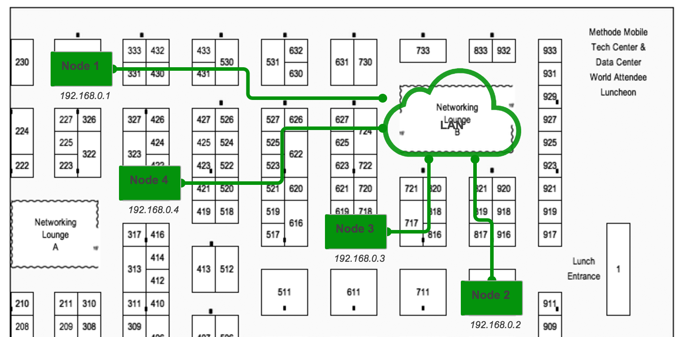
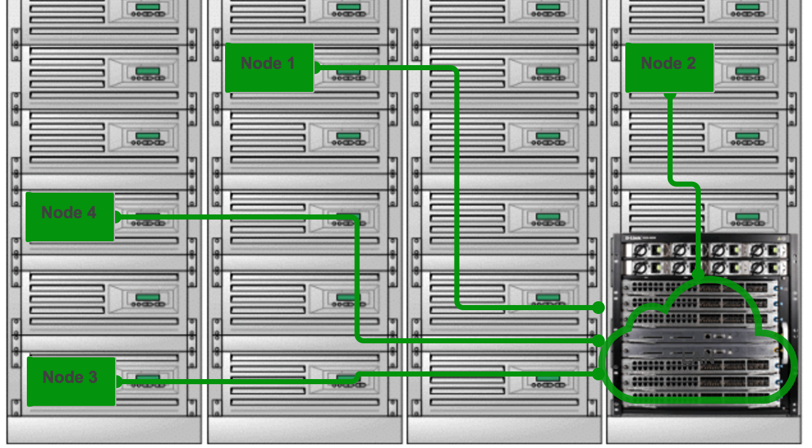

LiveSchema Gallery
Some of LiveSchema screenshots and examples.
A kind of application infrustructure
You can easily draw a schema of your service, application or network layer.

Example of a network with information flow
Since you defined a schema you can also draw an information flow over it.

Define the state check
A list of methods gives you an opportunity to make colored state checks for links and objects.

Displaying of the states
Have all the state checks defined you get the clear picture of your schema.

Displaying flow over the schema
You can show/hide the flow at any time you work with schema.

Geo map view
You can also have a geographical map view of objects and links.

Floor plan
Map your nodes in a Data Center. 
Rack view
Get a clear idea where the application is running. 
Multilevel description
You can describe as much levels of your production environment as you need.

Colors are customisable
In some cases you may want to see you schema in different colors.

03 Mar 2017
Contact us at welcome@liveschema.io
© LiveSchema Corp, Redwood City, CA